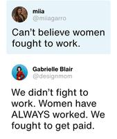

0


Grady Martin writes: A security researcher has leaked a complete repository of source code for Anthropic's flagship command-line tool. The file listing was exposed via a Node Package Manager (npm) mapping, with every target publicly accessible on a Cloudflare R2 storage bucket. There's been a number of discoveries as people continue to pore over the code. The DEV Community outlines some of the leak's most notable architectural elements and the key technical choices:
Architecture Highlights
The Tool System (~40 tools): Claude Code uses a plugin-like tool architecture. Each capability (file read, bash execution, web fetch, LSP integration) is a discrete, permission-gated tool. The base tool definition alone is 29,000 lines of TypeScript.
The Query Engine (46K lines): This is the brain of the operation. It handles all LLM API calls, streaming, caching, and orchestration. It's by far the largest single module in the codebase.
Multi-Agent Orchestration: Claude Code can spawn sub-agents (they call them "swarms") to handle complex, parallelizable tasks. Each agent runs in its own context with specific tool permissions.
IDE Bridge System: A bidirectional communication layer connects IDE extensions (VS Code, JetBrains) to the CLI via JWT-authenticated channels. This is how the "Claude in your editor" experience works.
Persistent Memory System: A file-based memory directory where Claude stores context about you, your project, and your preferences across sessions.
Key Technical Decisions Worth Noting
Bun over Node: They chose Bun as the JavaScript runtime, leveraging its dead code elimination for feature flags and its faster startup times.
React for CLI: Using Ink (React for terminals) is bold. It means their terminal UI is component-based with state management, just like a web app.
Zod v4 for validation: Schema validation is everywhere. Every tool input, every API response, every config file.
~50 slash commands: From /commit to /review-pr to memory management -- there's a command system as rich as any IDE.
Lazy-loaded modules: Heavy dependencies like OpenTelemetry and gRPC are lazy-loaded to keep startup fast.
Read more of this story at Slashdot.
Euro-Office is a new open-source project supported by several European companies that aims to offer a "truly open, transparent and sovereign solution for collaborate document editing," using OnlyOffice as a starting point. The project is positioned around European digital independence and familiar Office-style editing, though it has already drawn pushback from OnlyOffice over alleged licensing violations. "The company behind OnlyOffice is also based in Russia, and Russia is still heavily sanctioned by most European nations due to the country's ongoing invasion of Ukraine," adds How-To Geek. From the report: Euro-Office is a new open-source project supported by Nextcloud, EuroStack, Wiki, Proton, Soverin, Abilian, and other companies based in Europe. The goal is to build an online office suite that can open and edit standard Microsoft Office documents (DOCX, PPTX, XLSX) and the OpenDocument format (ODS, ODT, ODP) used by LibreOffice and OpenOffice. The current design is remarkably close to Microsoft Office and its tabbed toolbars, so there shouldn't be much of a learning curve for anyone used to Word, Excel, or PowerPoint.
Importantly, Euro-Office is only the document editing component. It's designed to be added to cloud storage services, online wikis, project management tools, and other software. For example, you could have some Word documents in your Nextcloud file storage, and clicking them in a browser could open the Euro-Office editor. That way, Nextcloud (or Proton, or anyone else) doesn't have to build its own document editor from scratch.
Euro-Office is based on OnlyOffice, which is open-source under the AGPL license. The project explained that "Contributing is impossible or greatly discouraged" with OnlyOffice's developers, with outside code changes rarely accepted, so a hard fork was required. The company behind OnlyOffice is also based in Russia, and Russia is still heavily sanctioned by most European nations due to the country's ongoing invasion of Ukraine. The project's home page explains, "A lot of users and customers require software that is not potentially influenced or controlled by the Russian government." As for why OnlyOffice was chosen over LibreOffice, the project simply said: "We believe open source is about collaboration, and we look for opportunities to integrate and collaborate with the LibreOffice community and companies like Collabora."
UPDATE: Slashdot reader Elektroschock shares a statement from OnlyOffice CEO Lev Bannov, expressing his concerns about the Euro-Office inclusion of its software with trademarks removed: "We liked the AGPL v3 license because its 7th clause allows us to ensure that our code retains its original attributes, so that users are able to clearly identify the developers and the brand behind the program..."
Bannov continued: "The core issue here isn't just about what the AGPL license states, but about the additional provisions we, as the authors, have included. This is a critical distinction, even if some may argue otherwise. We firmly assert that the Euro-Office project is currently infringing on our copyright in a deliberate and unacceptable manner."
"As the creators of ONLYOFFICE, we want to make our position unequivocally clear: we do not grant anyone the right to remove our branding or alter our open-source code without proper attribution. This principle is non-negotiable and will never change. We demand that the Euro-Office project either restore our branding and attributions or roll back all forks of our project, refraining from using our code without proper acknowledgment of ONLYOFFICE."
Read more of this story at Slashdot.
An anonymous reader quotes a report from Reuters: The Trump administration on Monday issued a long-awaited proposed rule to open up retirement plans to alternative assets, paving the way for private equity and cryptocurrencies to be added to 401(k) accounts. The measure, announced by the U.S. Department of Labor, is intended to ease longstanding barriers to incorporating these less liquid and less transparent assets into American retirement plans. It follows an executive order from President Donald Trump last summer and could clear the way for alternative asset management firms to tap a large new source of capital.
Industry groups have argued private market investments can enhance long-term returns and diversification for retirement savers, while skeptics warn higher fees, complexity and limited liquidity could limit those gains and pose risks for retail investors. Some private market funds that are already available to wealthier individual investors have shown signs of strain in recent months. Private credit funds known as business development companies have seen a wave of withdrawals. Treasury Secretary Scott Bessent said the proposed rule was "an initial step" and aimed to be "mindful of the importance of protecting retirement assets."
The guidance lays out how plan trustees, who have a legal fiduciary duty to act in the best interest of members, can incorporate these assets. They would have to "objectively, thoroughly, and analytically consider, and make determinations on factors including performance, fees, liquidity, valuation, performance benchmarks, and complexity," the DOL said. Trustees who abide by them will be granted safe harbor that protects them from lawsuits, it added. The Supreme Court agreed earlier this year to hear one such case filed in 2019 by a former Intel employee claiming trustees made "imprudent" decisions by investing in hedge funds and private equity funds.
Read more of this story at Slashdot.
Researchers found that common nitrile and latex lab gloves can shed stearate particles that closely resemble microplastics, potentially "increasing the risk of false positives when studying microplastic pollution," reports ScienceDaily.
"We may be overestimating microplastics, but there should be none," said Anne McNeil, senior author of the study and U-M professor of chemistry, macromolecular science and engineering. "There's still a lot out there, and that's the problem." From the report: Researchers found that these gloves can unintentionally transfer particles onto lab tools used to analyze air, water, and other environmental samples. The contamination comes from stearates, which are not plastics but can closely resemble them during testing. Because of this, scientists may be detecting particles that are not true microplastics. To reduce this issue, U-M researchers Madeline Clough and Anne McNeil recommend using cleanroom gloves, which release far fewer particles.
Stearates are salt-based, soap-like substances added to disposable gloves to help them separate easily from molds during manufacturing. However, their chemical similarity to certain plastics makes them difficult to distinguish in lab analyses, increasing the risk of false positives when studying microplastic pollution. "For microplastics researchers who have these impacted datasets, there's still hope to recover them and find a true quantity of microplastics," said researcher and recent doctoral graduate Madeline Clough. "This field is very challenging to work in because there's plastic everywhere," McNeil said. "But that's why we need chemists and people who understand chemical structure to be working in this field."
The findings have been published in the journal Analytical Methods.
Read more of this story at Slashdot.
OkCupid and parent company Match Group settled an FTC case dating back to 2014 over allegations that the dating app shared users' photos and other personal data with a third party without proper disclosure or opt-out rights. Engadget reports: According to the FTC, OkCupid's privacy policy at the time noted that the company wouldn't share a user's personal information with others, except for some cases including "service providers, business partners, other entities within its family of businesses." However, the lawsuit accused OkCupid of sharing three million photos of its users to Clarifai, which the FTC claims is a "unrelated third party" that didn't fall under the allowed entities. On top of that, the lawsuit alleged that OkCupid didn't inform its users of this data sharing, nor give them a chance to opt out.
Moving forward, the settlement would "permanently prohibit" Match Group, which owns OkCupid, and Humor Rainbow, which operates OkCupid, from misrepresenting what kind of personal information it collects, the purpose for collecting the data and any consumer choices to prevent data collection. Even after the 2014 incident, OkCupid was found with security flaws that could've exposed user account info but, which were quickly patched in 2020.
Read more of this story at Slashdot.
fjo3 shares a report from France 24: Too many lines of code to analyze, armies of AI assistants to wrangle, and lengthy prompts to draft are among the laments by hard-core AI adopters. Consultants at Boston Consulting Group (BCG) have dubbed the phenomenon "AI brain fry," a state of mental exhaustion stemming "from the excessive use or supervision of artificial intelligence tools, pushed beyond our cognitive limits."
The rise of AI agents that tend to computer tasks on demand has put users in the position of managing smart, fast digital workers rather than having to grind through jobs themselves. "It's a brand-new kind of cognitive load," said Ben Wigler, co-founder of the start-up LoveMind AI. "You have to really babysit these models." [...] "There is a unique kind of reward hacking that can go on when you have productivity at the scale that encourages even later hours," Wigler said.
[Adam Mackintosh, a programmer for a Canadian company] recalled spending 15 consecutive hours fine-tuning around 25,000 lines of code in an application. "At the end, I felt like I couldn't code anymore," he recalled. "I could tell my dopamine was shot because I was irritable and didn't want to answer basic questions about my day."
BCG recommends in a recently published study that company leaders establish clear limits regarding employee use and supervision of AI. However, "That self-care piece is not really an America workplace value," Wigler said. "So, I am very skeptical as to whether or not its going to be healthy or even high quality in the long term." Notably, the report says everyone interviewed for the article "expressed overall positive views of AI despite the downsides." In fact, a recent BCG study actually found a decline in burnout rates when AI took over repetitive work tasks.
Read more of this story at Slashdot.
An anonymous reader quotes a report from TorrentFreak: In an effort to gather material for its LLM training, Meta used BitTorrent to download pirated books from Anna's Archive and other shadow libraries. According to several authors, Meta facilitated the infringement of others by "seeding" these torrents. This week, the court granted the authors permission to add these claims to their complaint, despite openly scolding their counsel for "lame excuses" and "Meta bashing." [...] The judge acknowledged that the contributory infringement claim could and should have been added back in November 2024, when the authors amended their complaint to include the distribution claim. After all, both claims arise from the same factual allegations about Meta's torrenting activity.
"The lawyers for the named plaintiffs have no excuse for neglecting to add a contributory infringement claim based on these allegations back in November 2024," Judge Chhabria wrote. The lawyers of the book authors claimed that the delay was the result of newly produced evidence that had "crystallized" their understanding of Meta's uploading activity. However, that did not impress the judge. He called it a "lame excuse" and "a bunch of doubletalk," noting that if the missing discovery truly prevented the contributory claim from being added in November 2024, the same logic would have prevented the distribution claim from being added at that time as well. "Rather than blaming Meta for producing discovery late, the plaintiffs' lawyers should have been candid with the Court, explaining that they missed an issue in a case of first impression..," the order reads.
Judge Chhabria went further, noting that the authors' law firm, Boies Schiller, showed "an ongoing pattern" of distracting from its own mistakes by attacking Meta. He pointed specifically to the dispute over when Meta disclosed its fair use defense to the distribution claim, which we covered here recently, characterizing it as a false distraction. "The lawyers for the plaintiffs seem so intent on bashing Meta that they are unable to exercise proper judgment about how to represent the interests of their clients and the proposed class members," the order reads. Despite the criticism, Chhabria granted the motion. [...] For now, the case moves forward with a fourth amended complaint, three new loan-out companies added as named plaintiffs, and a growing list of BitTorrent-related claims for Judge Chhabria to resolve.
Read more of this story at Slashdot.
An anonymous reader quotes a report from the BBC: Sweeping job cuts at Big Tech companies have become an annual tradition. How executives explain those decisions, however, has changed. Out are buzzwords like efficiency, over-hiring, and too many management layers. Today, all explanations stem from artificial intelligence (AI). In recent weeks, giants including Google, Amazon, Meta, as well as smaller firms such as Pinterest and Atlassian, have all announced or warned of plans to shrink their workforce, pointing to developments in AI that they say are allowing their firms to do more with fewer people. [...] But explaining cuts by pointing to advances in AI sounds better than citing cost pressures or a desire to please shareholders, says tech investor Terrence Rohan, who has had a seat on many company boards. "Pointing to AI makes a better blog post," Rohan says. "Or it at least doesn't make you seem as much the bad guy who just wants to cut people for cost-effectiveness."
That does not mean there is no substance behind the words, Rohan added. Some of the companies he's backing are using code that is 25% to 75% AI-generated. That is a sign of the real threat that AI tools for writing code represent to jobs such as software developer, computer engineer and programmer, posts once considered a near-guarantee of highly paid, stable careers. "Some of it is that the narrative is changing, some of it is that we really are starting to see step changes in productivity," Anne Hoecker, a partner at Bain who leads the consultancy's technology practice, says of the recent job cuts. "Leaders more recently are seeing these tools are good enough that you really can do the same amount of work with fundamentally less people."
There is another way that AI is driving job cuts -- and it has nothing to do with the technical abilities of coding tools and chatbots. Amazon, Meta, Google and Microsoft are collectively planning to pour $650 billion into AI in the coming year. As executives hunt for ways to try to ease investor shock at those costs, many are landing on payroll, typically tech firms' single biggest expense. [...] Although the expense of, for example, 30,000 corporate Amazon employees is dwarfed by that company's AI spending plans, firms of this size will now take any opportunity to cut costs, Rohan says. "They're playing a game of inches," Rohan says of cuts at Big Tech firms. "If you can even slightly tune the machine, that is helpful." Hoecker says cutting jobs also signals to stock market investors worried about the "real and huge" cost of AI development that executives are not blithely writing blank cheques. "It shows some discipline," says Hoecker. "Maybe laying off people isn't going to make much of a dent in that bill, but by creating a little bit of cashflow, it helps."
Read more of this story at Slashdot.
Researchers at the University of Waterloo say a new "quadratic quantum gravity" framework could explain the universe's rapid early expansion without adding extra ingredients to Einstein's theory by hand. The idea is especially notable because it makes testable predictions, including a minimum level of primordial gravitational waves that future experiments may be able to detect. "Even though this model deals with incredibly high energies, it leads to clear predictions that today's experiments can actually look for," said Dr. Niayesh Afshordi, professor of physics and astronomy at the University of Waterloo and Perimeter Institute (PI). "That direct link between quantum gravity and real data is rare and exciting." Phys.org reports: The research team found that the Big Bang's rapid early expansion can emerge naturally from this simple, consistent theory of quantum gravity, without adding any extra ingredients. This early burst of expansion, often called inflation, is a central idea in modern cosmology because it explains why the universe looks the way it does today.
Their model also predicts a minimum amount of primordial gravitational waves, which are tiny ripples in spacetime geometry created in the first moments after the Big Bang. These signals may be detectable in upcoming experiments, offering a rare chance to test ideas about the universe's quantum origins.
[...] The team plans to refine their predictions for upcoming experiments to explore how their framework connects to particle physics and other puzzles about the early universe. Their long-term goal is to strengthen the bridge between quantum gravity and observational cosmology. The research has been published in the journal Physical Review Letters.
Read more of this story at Slashdot.
An anonymous reader quotes a report from New Scientist: Andrea Marinoni at the University of Cambridge, UK, and his colleagues saw that the amount of energy needed to run a data centre had been steadily increasing of late and was likely to "explode" in the coming years, so wanted to quantify the impact. The researchers took satellite measurements of land surface temperatures over the past 20 years and cross-referenced them against the geographical coordinates of more than 8400 AI data centers. Recognizing that surface temperature could be affected by other factors, the researchers chose to focus their investigation on data centers located away from densely populated areas.
They discovered that land surface temperatures increased by an average of 2C (3.6F) in the months after an AI data center started operations. In the most extreme cases, the increase in temperature was 9.1C (16.4F). The effect wasn't limited to the immediate surroundings of the data centers: the team found increased temperatures up to 10 kilometers away. Seven kilometers away, there was only a 30 percent reduction in the intensity. "The results we had were quite surprising," says Marinoni. "This could become a huge problem."
Using population data, the researchers estimate that more than 340 million people live within 10 kilometers of data centers, so live in a place that is warmer than it would be if the data centre hadn't been built there. Marinoni says that areas including the Bajio region in Mexico and the Aragon province in Spain saw a 2C (3.6F) temperature increase in the 20 years between 2004 and 2024 that couldn't otherwise be explained. University of Bristol researcher Chris Preist said the findings may be more complicated than they look. "It would be worth doing follow-up research to understand to what extent it's the heat generated from computation versus the heat generated from the building itself," he says. For example, the building being heated by sunlight may be part of the effect.
The findings of the study, which has not yet been peer-reviewed, can be found on arXiv.
Read more of this story at Slashdot.
Microsoft is reportedly shifting Windows 11 app development back toward fully native apps. Rudy Huyn, a Partner Architect at Microsoft working on the Store and File Explorer, said in a post on X that he is building a new team to work on Windows apps. "You don't need prior experience with the platform.. what matters most is strong product thinking and a deep focus on the customer," he wrote. "If you've built great apps on any platform and care about crafting meaningful user experiences, I'd love to hear from you." Huyn later said in a reply on X that the new Windows 11 apps will be "100% native." TechSpot reports: The description stands out at a time when many of Microsoft's built-in tools, including Clipchamp and Copilot, rely on web technologies and Progressive Web App architectures. The company's commitment to native performance suggests that some long-standing frustrations around responsiveness, memory use, and interface consistency could finally be addressed.
For Windows developers, Huyn's comments hint at a change in direction. Microsoft's recent development priorities have leaned heavily on web-based approaches, with Progressive Web Apps (PWAs) replacing or supplementing many native programs. [...] Exactly which applications will be rebuilt, or how strictly "100% native" will be enforced, remains unclear. Some current Microsoft apps classified as native still depend on WebView for specific features. But the renewed emphasis already has developers paying attention.
Read more of this story at Slashdot.
An anonymous reader quotes a report from Ars Technica: Last year, just before the Fourth of July holiday, the US Space Force officially took ownership of a new operating system for the GPS navigation network, raising hopes that one of the military's most troubled space programs might finally bear fruit. The GPS Next-Generation Operational Control System, or OCX, is designed for command and control of the military's constellation of more than 30 GPS satellites. It consists of software to handle new signals and jam-resistant capabilities of the latest generation of GPS satellites, GPS III, which started launching in 2018. The ground segment also includes two master control stations and upgrades to ground monitoring stations around the world, among other hardware elements.
RTX Corporation, formerly known as Raytheon, won a Pentagon contract in 2010 to develop and deliver the control system. The program was supposed to be complete in 2016 at a cost of $3.7 billion. Today, the official cost for the ground system for the GPS III satellites stands at $7.6 billion. RTX is developing an OCX augmentation projected to cost more than $400 million to support a new series of GPS IIIF satellites set to begin launching next year, bringing the total effort to $8 billion.
Although RTX delivered OCX to the Space Force last July, the ground segment remains nonoperational. Nine months later, the Pentagon may soon call it quits on the program. Thomas Ainsworth, assistant secretary of the Air Force for space acquisition and integration, told Congress last week that OCX is still struggling. The GAO found the OCX program was undermined by "poor acquisition decisions and a slow recognition of development problems." By 2016, it had blown past cost and schedule targets badly enough to trigger a Pentagon review for possible cancellation.
Officials also pointed to cybersecurity software issues, a "persistently high software development defect rate," the government's lack of software expertise, and Raytheon's "poor systems engineering" practices. Even after the military restructured the program, it kept running into delays and overruns, with Ainsworth telling lawmakers, "It's a very stressing program" and adding, "We are still considering how to ensure we move forward."
Read more of this story at Slashdot.
Samsung is reportedly planning to roll out AirDrop-style file sharing for older Galaxy phones via a Quick Share update. Early reports suggest the feature is appearing on devices from the Galaxy S22 through the S25, though it is not actually working yet. Android Central reports: As spotted by Reddit users (via Tarun Vats on X), a Quick Share app update is rolling out via the Galaxy Store on older Samsung devices that appears to add support for AirDrop file sharing with Apple devices. Users report seeing the same new "Share with Apple devices" section we first saw on Galaxy S26 devices in the Settings app after updating Quick Share.
The update is reportedly showing up on Galaxy models ranging from the Galaxy S22 to last year's Galaxy S25 series. The catch, however, is that the feature doesn't seem to be working yet. It's appearing on devices running One UI 8 as well as the One UI 8.5 beta, but enabling the toggle doesn't activate the functionality for now.
Users say that turning on the feature doesn't make their device visible to Apple devices, and no Apple devices show up in Quick Share either. It's possible Samsung or Google still needs to enable it server-side, but it does confirm that broader rollout to older Galaxy devices is coming. The feature could arrive fully with the One UI 8.5 update.
Read more of this story at Slashdot.
For the "foreseeable future," Sony says it has stopped accepting new orders for most of its CFexpress and SD memory card lines due to the an ongoing memory supply shortage. "Due to the global shortage of semiconductors (memory) and other factors, it is anticipated that supply will not be able to meet demand for CFexpress memory cards and SD memory cards for the foreseeable future," the company said in a notice. "Therefore, we have decided to temporarily suspend the acceptance of orders from our authorized dealers and from customers at the Sony Store from March 27, 2026 onwards. PetaPixel reports: The suspension includes all of Sony's memory card lines, including CFexpress Type A, CFexpress Type B, and SD cards. The 240GB, 480GB, 960GB, and 1920GB capacity Type A cards have been suspended, as have the 480GB and 240GB Type B cards. The full gamut of Sony's high-end SD cards has also been suspended, including the 256GB, 128GB, and 64GB TOUGH-branded cards and the lower-end 512GB, 256GB, 128GB, and 256GB plainly-branded Sony cards, which cap out at V60 speeds. Even Sony's lower-end, V30 128GB and 64GB SD cards have been suspended, showcasing that the SSD shortage affects all types of solid state, not just the high-end ones.
It appears that only the 960GB CFexpress Type B card and the lowest-end SF-UZ series SD cards remain in production. However, those UHS-I SD cards are discontinued in the United States outside of a scant few retailers and resellers. "We sincerely apologize for any inconvenience this may cause our customers," Sony concludes.
Read more of this story at Slashdot.
Microsoft Copilot is reportedly injecting promotional "tips" into GitHub pull requests, with Neowin claiming more than 1.5 million PRs have been affected by messages advertising integrations like Raycast, Slack, Teams, and various IDEs. From the report: According to Melbourne-based software developer Zach Manson, a team member used the AI to fix a simple typo in a pull request. Copilot did the job, but it also took the liberty of editing the PR's description to include this message: "Quickly spin up Copilot coding agent tasks from anywhere on your macOS or Windows machine with Raycast." A quick search of that phrase on GitHub shows that the same promotional text appears in over 11,000 pull requests across thousands of repositories. Even merge requests on GitLab aren't safe from the injection.
So what's happening? Well, Raycast has a Copilot extension that can do things like create pull requests from a natural language command. The ad directly names Raycast, so you might think that Raycast is injecting the promo into the PRs to market its own app. But it is more likely that Microsoft is the one doing the injecting. If you look at the raw markdown of the affected pull requests, there is a hidden HTML comment, "START COPILOT CODING AGENT TIPS" placed right just before the ad tip. This suggests Microsoft is using the comment to insert a "tip" that points back to its own developer ecosystem or partner integrations. UPDATE: Following backlash from developers, Microsoft has removed Copilot's ability to insert "tips" into pull requests. Tim Rogers, principal product manager for Copilot at GitHub, said the move was intended "to help developers learn new ways to use the agent in their workflow."
"On reflection," Rogers said he has since realized that letting Copilot make changes to PRs written by a human without their knowledge "was the wrong judgement call."
Read more of this story at Slashdot.
Abner Li / 9to5Google : Google launches Veo 3.1 Lite, costing <50% of Veo 3.1 Fast and meant for “high-volume video applications”, and affirms its commitment to video generation tools — Following OpenAI's Sora exit last week, Google today said it's committed to offering video generation while announcing Veo 3.1 Lite.
Julia Shapero / The Hill : Iran says it will start targeting US tech companies like Apple, Google, Meta, Microsoft, Nvidia and Tesla in the Middle East starting 8PM local time on April 1 — Iran's Islamic Revolutionary Guard Corps (IRGC) said Tuesday that it plans to target major U.S. technology companies across the Middle East …
Bloomberg : Google researchers warn that quantum computers may crack elliptic-curve cryptography, which helps secure crypto wallets, with 20x fewer resources than expected — Google researchers warned that future quantum computers may be able to break some of the cryptography protecting Bitcoin …
Mark Gurman / Bloomberg : Sources: Apple is testing letting Siri process multiple requests in a single query in iOS 27, and explored a Grammarly-like keyboard that expands autocorrect — Apple Inc. is testing a feature that would let Siri process multiple requests in a single query, according to people familiar with the matter …
Ana Swanson / New York Times : A global WTO ban on taxing digital streaming and downloads across national borders expired on March 30; negotiations are set to continue in Geneva this spring — A prohibition on taxing digital downloads expired, after members of the World Trade Organization concluded their annual meeting without an agreement.
Jordan Novet / CNBC : Sources: Oracle is cutting thousands of jobs in its latest layoffs as the company continues to ramp AI spending; as of May 2025, Oracle employed 162,000 people — Software maker Oracle has started telling employees that it's conducting a round of layoffs, two people familiar with the move told CNBC.
Carl Franzen / VentureBeat : Claude Code's source code appears to have leaked via a misconfigured npm package, revealing internal codenames, a “Self-Healing Memory” architecture, and more — Anthropic appears to have accidentally revealed the inner workings of one of its most popular and lucrative AI products …
Guru Baran / Cyber Security News : Anthropic's Claude Code Source Code Reportedly Leaked Via Their npm Registry — Anthropic's proprietary Claude Code CLI tool has had its full TypeScript source code inadvertently exposed through a misconfigured npm package, after a security researcher discovered a leaked .map file referencing …
Kris Holt / Engadget : Google says all users in the US can now change their Google Account username; users are restricted to one username change every 12 months — Your old email will still be available as an alternate address. … Many of us have a poorly chosen email address that's laced with regret, but we're now stuck with it.
Rebecca Bellan / TechCrunch : Runway launches a $10M fund to invest in early-stage startups building across AI, media, and world simulation and a Builders program offering free API credits — Runway is moving beyond building AI video models and into shaping what gets built on top of them.
Karissa Bell / Engadget : Meta unveils the $499 Ray-Ban Meta Blayzer Optics and Scriber Optics, with swappable nosepads and compatibility with more prescription lenses, on sale April 14 — Meta is also adding new translation and food-tracking abilities to all its frames. — The latest iteration of Meta's smart glasses …
Yizhu Wang / Bloomberg : Amazon replaces Amex with US Bancorp as the issuer for its Prime Business and Amazon Business credit cards that it is relaunching in the coming months — Amazon.com Inc. tapped U.S. Bancorp to be the issuer for two small business credit cards that the e-commerce platform is relaunching in the coming months.
Reuters : OpenFX, an FX market-making and remittance startup launched by a FalconX co-founder, raised $94M led by Accel and others, a source says at a ~$500M valuation — OpenFX, a startup that focuses on foreign-exchange market making and remittances, on Tuesday raised $94 million in a funding round led …
Ben Bergman / Business Insider : New York-based Linx Security, whose Autopilot agent proactively maps and remediates identity-related failures, raised a $50M Series B from Index and others — Follow Ben Bergman … - Linx counts Index Ventures, Cyberstarts, and Insight Partners among its backers.
Edward Ludlow / Bloomberg : Micromobility delivery startup Also, a Rivian spinoff, raised $200M led by Greenoaks at a $1B valuation and enters a multiyear partnership with DoorDash — Also, an electric bike and transportation startup spun out of Rivian Automotive Inc., has reached a $1 billion valuation in a new funding round …